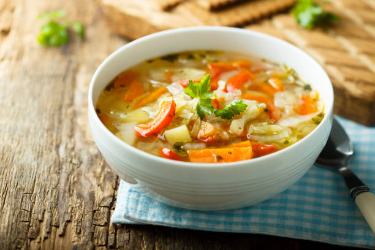

Soup

Description
Feeling down and need a pick me up? Feeling cold and need some warmth? Hungry and need something filling? Then look no more! This recipe takes you through
a classic way of making a soup so good you'll want to scream "Eureka!" And the best part? You don't even need a lot of ingredients! Just throw in whatever
leftover scarps you have and enjoy the flavor!
Ingredients
- Vegetable scraps
- Water
- Potatoes
- Salt
Steps
- Put vegetable scraps into a large stockpot and fill with water
- Bring the water to a boil. Once the water is boiling, put it to low and let it simmer for 3 hours
- In the meantime, peel and cut up 5 large potatoes
- Soak the potatoes in cold water for 5 minutes to remove excess starch
- After simmering for 3 hours, strain out the vegetable scraps to leave a clear vegetable stock
- Take out the potatoes and place into the vegetable stock and boil for 15 to 20 minutes until the potatoes are tender
- Add salt to taste
Homepage